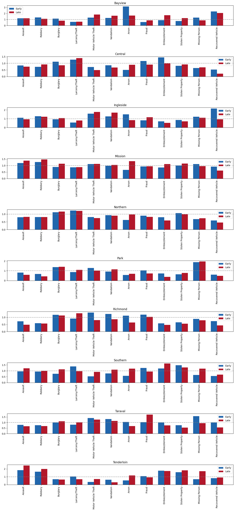

Introduction
Crime data can be read from many angles, but the most informative patterns often appear when temporal and spatial perspectives are combined. A citywide trend may suggest that crime changes over time, yet that aggregate view can hide strong local differences between districts. In the same way, a spatial hotspot may look stable until the daily timing of incidents is examined more closely.
The dataset used for this project merges the Police_Department_Incident_Reports__2018_to_Present_20260203 and the Police_Department_Incident_Reports__Historical_2003_to_May_2018_20260210 datasets available on the San Francisco Open Data portal. From all the original crime categories, only twelve were selected for this project based on the estability of the merge considering the different reporting standards across the two datasets. The final dataset contains 12 categories of crime, 10 districts, and a time range from 2003 to early 2026. The selected focus crimes are Assault, Burglary, Robbery, Larceny/Theft, Motor Vehicle Theft, Vandalism, Arson, Fraud, Stolen Property, Embezzlement, Recovered Vehicle, and Missing Person.
The three sections below therefore follow a simple logic. First, the map shows how the crime is distributed across districts. Second, the temporal analysis reveals how these patterns evolve over time. Third, the interactive plot adds a finer temporal layer, showing that the timing of incidents also matters when interpreting urban crime patterns.
1. Spatial distribution of crime
As an opening plot, this figure establishes the central idea that crime is dynamic rather than fixed. Not all districts share the same socioeconomic conditions, what makes some of them more prone to crime than others. As we can see in the map, the Southern district has a much higher relative risk of crime compared to the other districts, while the Northern and Central districts also show elevated levels. In contrast, the Richmond and Park districts have a lower relative risk, indicating that crime is not evenly distributed across the city. In general terms, the crime is more concentrated in the eastern parts of San Francisco, while the western parts are less dangerous. This spatial variation sets the stage for the next section, which explores how these patterns change over time.
2. Patterns change over time
Once we know that crime is not evenly distributed across space, we can go deeper. In the second figure, we examine the exact crime profile of each district. We don't just want to know which one is more dangerous, but also how the different crime categories contribute to the overall risk. An interesting thing about this plot is that we can also study the profiles of the different crime categories based on the socioeconomic situation of the districts. As a third layer of analysis, we can also compare how these profiles change over time as the visualization displays two different bars for each crime in each district: one for the period 2003-2018 and the other one for the period 2018-now.
As the figure shows so much information, there is a lot of room for analysis. First of all, we can see the criminal profiles of the districts not being the same over time. One of the most notorious changes in profile is in the Central district, where crimes in the categories Burglary, Embezzlement and Fraud used to be more common but now the most common crime is by far Larceny/Theft.
It is also interesting to analyze how crime is not evenly distributed in districts with similar crime ratio. The two districts with the highest ratio are Northern and Southern, but the crime profile of Northern is more balanced and with less change over time, while the crime profile of Southern changed a lot in both periods and also has more peaks and valleys.

3. Daily timing of incidents
The final section moves from long-term change and spatial concentration to the shorter temporal rhythm of the city. The interactive hourly chart shows that crime is not only uneven across districts, but also uneven across the hours of the day. Some categories peak during daytime activity, while others become more visible in the evening or at night.
This last visualization completes the story by showing that urban crime must be interpreted at multiple scales. The city changes over years, differs across districts, and also follows recurring daily patterns. Together, the three figures provide a more coherent understanding than any single plot could offer on its own.